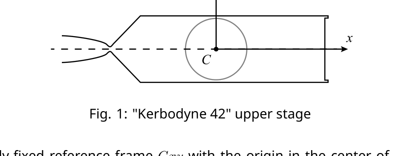
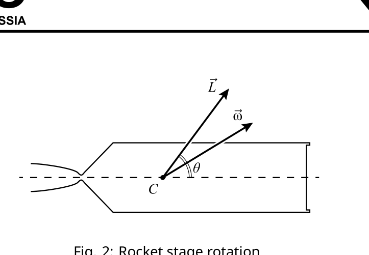
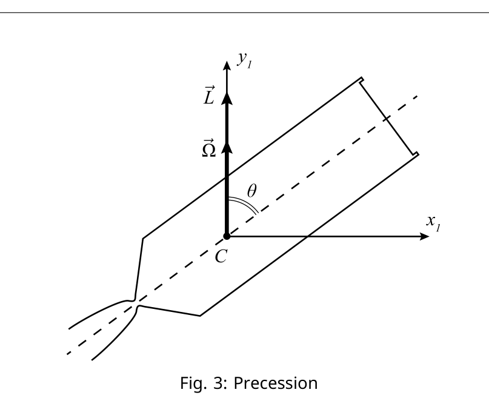
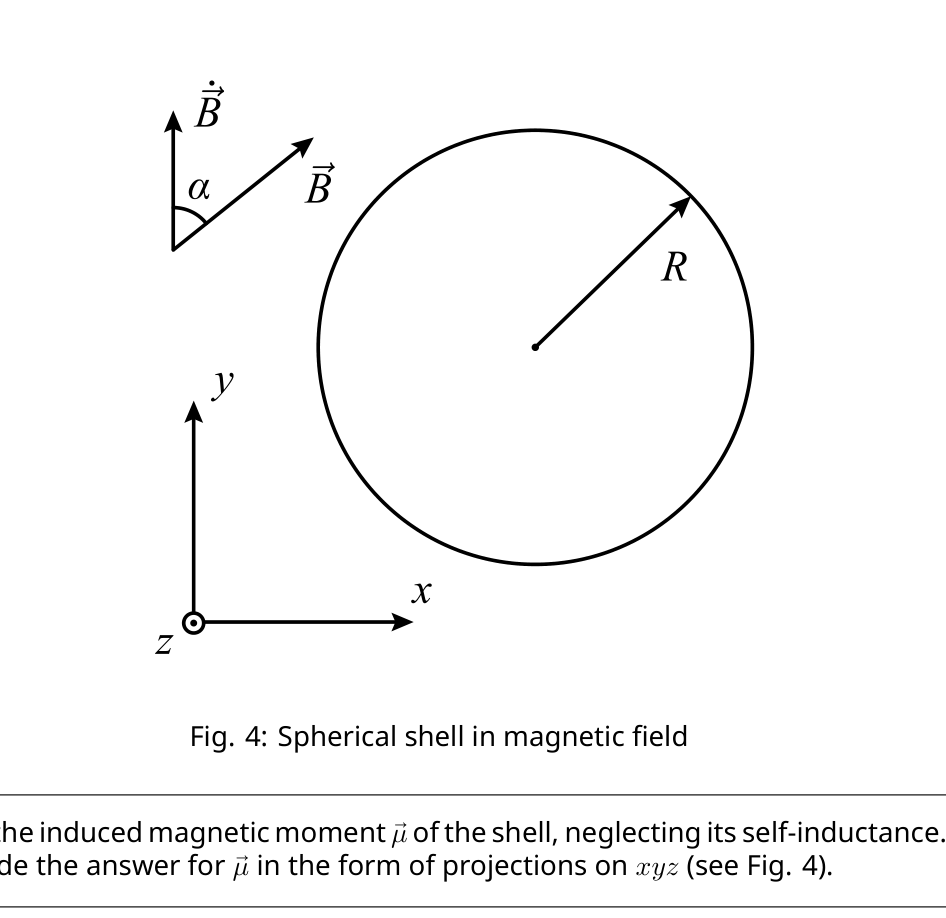
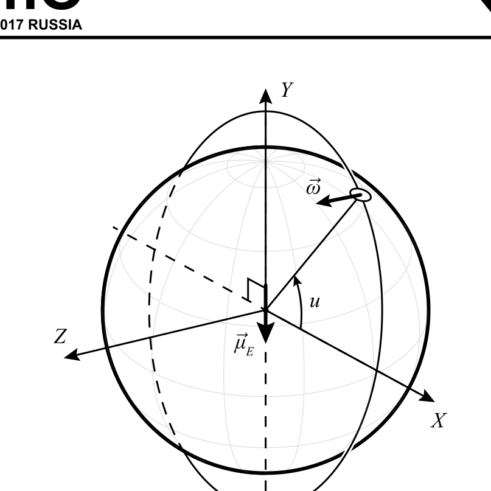

Space Debris
Introduction
In more than half a century of space operations quite a large number of man-made objects have been amassed near Earth. The objects that do not serve any particular purpose are called space debris. The most attention is usually paid to the larger debris objects, i.e. defunct satellites and spent rocket upper stages, which stay in orbit after delivering their payload. Collisions of such objects with each other may result in thousands of fragments endangering all current space missions.
There is a well-known hypothetical scenario, according to which certain collisions may cause a cascade where each subsequent collision generates more space debris that increase the likelihood of new collisions. Such a chain reaction, resulting in the loss of all near-Earth satellites and making impossible further space programs, is called the Kessler syndrome.
To prevent such undesirable outcome special missions are planned to remove large debris object from their present orbits either by tugging them to the Earth’s atmosphere or to graveyard orbits. To this end a specially designed spacecraft – a space tug – must capture a debris object. However, before capturing an uncontrolled object it is important to understand its rotational dynamics.
We suggest you to take part in planning of such a mission and find out how the rotational dynamics of a debris object changes in time under the influence of different factors.
Rocket Stage Schematic
The debris object to be considered is a “Kerbodyne 42” rocket upper stage, whose schematic is shown in Fig. 1. The circle line in Fig. 1 marks the outline of a spherical fuel tank.

Fig. 1: “Kerbodyne 42” upper stageWe introduce a body-fixed reference frame with the origin in the center of mass , being the symmetry axis of the stage, and perpendicular to . The inertia moments with respect to and axes are and ().
Part A. Rotation (3.8 points)
Consider an arbitrary initial rotation of the stage with angular momentum (Fig. 2), where is the angle between the symmetry axis and the direction of angular momentum. Fuel tank at this point is assumed to be empty. No forces or torques act upon the stage.

Fig. 2: Rocket stage rotationA.1 (0.2pt) Find the projections of angular velocity on and , given that for material symmetry axes and with unit vectors and . Provide the answer in terms of , angle , and inertia moments , .
A.2 (0.4pt) Find the rotational energy associated with rotation and associated with rotation . Find total rotational kinetic energy of the stage as a function of the angular momentum and .
In the following questions of Section A consider the stage’s free rotation with the initial angular momentum and .
A.3 (1.2pt) Let us denote by the initial orientation of the stage’s symmetry axis with respect to inertial reference frame. Using conservation laws find the maximum angle , which the stage’s symmetry axis makes with during the stage’s free rotation.
Note: Since there are no external torques acting upon the stage, the angular momentum vector remains constant.

Fig. 3: PrecessionLet us now introduce the reference frame with along the constant angular momentum vector (Fig. 3). This reference frame rotates about in such a way, that the stage’s symmetry axis always belongs to the plane.
A.4 (2.0pt) Given , , and inertia moments , , find the angular velocity of the reference frame about and direction and absolute value of angular velocity of the stage relative to the reference frame as functions of time. Provide the answer for direction in terms of angle it makes with the symmetry axis .
Note: angular velocity vectors are additive .
Part B. Transient Process (1.6 points)
Most of the propellant is used during the ascent, however, after the payload has been separated from the stage, there still remains some fuel in its tank. Mass of residual fuel is negligible in comparison to the stage’s mass . Sloshing of the liquid fuel and viscous friction forces in the fuel tank result in energy losses, and after a transient process of irregular dynamics the energy reaches its minimum.
B.1 (0.6pt) Find the value of angle after the transient process for arbitrary initial values of and .
Angle between the stage’s angular velocity and the symmetry axis
B.2 (0.6pt) Calculate the value of angular velocity after the transient process, given that initial angular velocity makes an angle of with the stage’s symmetry axis. The moments of inertia are and .
Part C. Magnetic Field (4.6 points)
Another important factor in rotational dynamics of a debris rocket stage, which is orbiting the Earth, is its interaction with the Earth’s magnetic field. Let us first consider an auxiliary problem.
Torque due to Eddy Currents
Let us place a thin-walled nonmagnetic spherical shell with wall thickness and radius in a uniform magnetic field , which slowly changes so that its derivative is a constant vector making angle with the direction of (Fig. 4). Electrical resistivity of the shell’s material is .

Fig. 4: Spherical shell in magnetic fieldC.1 (1.0pt) Find the induced magnetic moment of the shell, neglecting its self-inductance. Provide the answer for in the form of projections on (see Fig. 4).
C.2 (0.3pt) Find the torque acting on the spherical shell. Provide the answer for in the form of projections on (see Fig. 4).
Attitude Motion Evolution in the Earth’s Magnetic Field
Let us find out how the rotation changes for a rocket stage, which moves in a circular polar orbit with orbital period (Fig. 5). It transpires that the characteristic times of dynamics due to interaction with the geomagnetic field are much greater than the duration of the transient process. We will now study what happens to the rocket stage after the transient process has completed. To start our analysis consider the stage rotating with angular velocity about the axis perpendicular to the orbital plane.

Fig. 5: The orbitC.3 (0.4pt) The Earth’s magnetic field can be modeled as the magnetic field of a point dipole in the Earth’s center. Its dipole moment is directed opposite to axis. The absolute value of the Earth’s magnetic field at the point where the orbit crosses the equatorial plane is . Find at a current position of the stage in the orbit defined by the angle as shown in Fig. 5. The positive direction of is along with the orbital motion. Provide the answer in the form of the projections of on .
Note: It may facilitate subsequent calculations if projections of are given as functions of instead of .
Note: Magnetic field of a dipole at point is given by
\vec{B} = \frac{\mu_0}{4\pi} \left( \frac{3(\vec{\mu} \cdot \vec{r})\vec{r}}{r^5} - \frac{\vec{\mu}}{r^3} \right). \tag{1}
The “Kerbodyne 42” rocket upper stage is mostly made of wood, and the only conductive material is used for its cryogenic fuel tank. We, therefore, consider the stage’s interaction with the geomagnetic field as that of the spherical shell with wall thickness mm, radius m and resistivity .
C.4 (1.3pt) Find the torque acting on the stage, as it rotates about the axis perpendicular to the orbital plane with angular velocity collinear to . Provide the answer in the form of the projections of on .
C.5 (1.0pt) Find the absolute value of angular velocity as a function of time, given that the change in the stage’s angular velocity over one orbital period is negligibly small.
C.6 (1.0pt) Find the ratio of the orbital period and the rocket stage’s rotation period in the steady-state regime, which sets in after a long time.
Fonte: Testo (PDF) — p.1
Topic: Rotational Dynamics, Electromagnetic Induction Metodi: Torque & Angular Momentum Analysis, Conservation Laws, Faraday’s Law of Induction, Lorentz Force Analysis Competenze: Physical Reasoning, Mathematical Modeling Objects: Satellite, Magnetic Dipole
Detriti spaziali
Introduzione
In oltre mezzo secolo di operazioni spaziali si sono accumulati vicino alla Terra un gran numero di oggetti artificiali. Gli oggetti che non servono a uno scopo particolare sono chiamati detriti spaziali. Di solito la maggior attenzione è rivolta agli oggetti di detriti più grandi, cioè satelliti non funzionanti e le fasi superiori dei razzi usati, che restano in orbita dopo la consegna del carico utile. Le collisioni di tali oggetti tra loro possono portare a migliaia di frammenti che mettono in pericolo tutte le missioni spaziali attuali.
C’è un noto scenario ipotetico, secondo il quale alcune collisioni possono causare una cascata in cui ogni collisione successiva genera più detriti spaziali che aumentano la probabilità di nuove collisioni. Tale reazione a catena, che porta alla perdita di tutti i satelliti vicini alla Terra e rende impossibili ulteriori programmi spaziali, è chiamata sindrome di Kessler.
Per prevenire tali risultati indesiderati, sono previste missioni speciali per rimuovere grandi detriti da orbite attuali, attirandoli nell’atmosfera terrestre o in orbite cimiteri. Per questo motivo, una nave spaziale appositamente progettata un reggiseno spaziale deve catturare un oggetto di detriti. Tuttavia, prima di catturare un oggetto non controllato è importante comprendere la sua dinamica di rotazione.
Ti suggeriamo di partecipare alla pianificazione di una missione del genere e scoprire come la dinamica di rotazione di un oggetto di detriti cambia nel tempo sotto l’influenza di diversi fattori.
Schema di scena del razzo
L’oggetto di detriti da considerare è un razzo “Kerbodyne 42” di livello superiore, il cui schema è mostrato nella figura. 1. La linea del cerchio in Fig. 1 segna la struttura di un serbatoio di combustibile sferico.
Fig. 1: “Kerbodyne 42” fase superiore
Introduciamo un quadro di riferimento fisso a corpo con l’origine nel centro di massa , essendo l’asse di simmetria dello stadio, e perpendicolare a . I momenti di inerzia rispetto agli assi e sono e ().
Parte A. Rotation (3,8 punti)
Considerare una rotazione iniziale arbitraria della fase con impulso angolare (Fig. 2), dove è l’angolo tra l’asse di simmetria e la direzione del momento angolare. Si presume che il serbatoio di carburante sia vuoto. Nessuna forza o coppia agiscono sul palco.
Fig. 2: rotazione di fase del razzo
A.1 *(0.2pt) * Trova le proiezioni della velocità angolare su e , dato che per gli assi di simmetria materiale e con vettori unitari e . Fornire la risposta in termini di , angolo e momenti di inerzia , .
A.2 *(0.4pt) * Trova l’energia di rotazione associata alla rotazione e associata alla rotazione . Trova l’energia cinetica di rotazione totale dello stadio in funzione del momento angolare e .
Le domande di cui alla sezione A riportate in appresso presentano la rotazione libera della fase con il momento angolare iniziale e .
**A.3 ** *(1.2pt) * Indichiamo con l’orientamento iniziale dell’asse di simmetria della fase rispetto al quadro di riferimento inerziale. Usando le leggi di conservazione, si trova l’angolo massimo , che l’asse di simmetria dello stadio fa con durante la rotazione libera dello stadio.
Nota: poiché non ci sono coppie esterne che agiscono sul palco, il vettore di momentum angolare rimane costante.
Fig. 3: Precessione
Introducendo ora il quadro di riferimento con lungo il vettore di momentum angolare costante (Fig. 3). Questo quadro di riferimento ruota intorno a in modo tale che l’asse di simmetria della scena appartiene sempre al piano .
A.4 *(2.0pt) * Dati , e momenti di inerzia , , si trova la velocità angolare del quadro di riferimento circa e la direzione e il valore assoluto della velocità angolare dello stadio rispetto al quadro di riferimento come funzioni del tempo. Fornisce la risposta per la direzione in termini di angolo che essa fa con l’asse di simmetria .
Nota: i vettori di velocità angolare sono additivi .
Parte B. Processo transitorio (1,6 punti)
La maggior parte del propellente viene utilizzata durante l’ascesa, tuttavia, dopo che il carico utile è stato separato dalla scena, rimane ancora un po’ di carburante nel suo serbatoio. La massa del combustibile residuo è trascurabile rispetto alla massa dello stadio. Il declino del combustibile liquido e le forze di attrito viscose nel serbatoio del combustibile provocano perdite di energia e, dopo un processo transitorio di dinamica irregolare, l’energia raggiunge il suo minimo.
B.1 *(0,6pt) * Trova il valore dell’angolo dopo il processo transitorio per i valori iniziali arbitrari di e .
Angolo tra la velocità angolare della scena e l’asse di simmetria
B.2 *(0,6pt) * Calcolare il valore della velocità angolare dopo il processo transitorio, dato che la velocità angolare iniziale fa un angolo di con l’asse di simmetria della tappa. I momenti di inerzia sono e .
Parte C. Campo magnetico (4,6 punti)
Un altro fattore importante nella dinamica di rotazione di uno stadio di razzo di detriti, che orbita la Terra, è la sua interazione con il campo magnetico terrestre. Prendiamo in considerazione un problema ausiliario.
Torque dovuto a Eddy Currents
Mettiamo una conchiglia sferica non magnetica a pareti sottili con spessore e raggio in un campo magnetico uniforme , che cambia lentamente in modo che la sua derivata sia un angolo di formazione vettoriale costante con la direzione (Fig. 4). La resistenza elettrica del materiale della conchiglia è .
Fig. 4: conchiglia sferica in campo magnetico
C.1 *(1.0pt) * Trova il momento magnetico indotto della conchiglia, trascurando la sua auto-induzione. Fornire la risposta per sotto forma di proiezioni su (vedi figura 1. 4).
C.2 *(0.3pt) * Trova la coppia che agisce sulla conchiglia sferica. Fornire la risposta per sotto forma di proiezioni su (vedi figura 1. 4).
Mozione di atteggiamento Evoluzione nel campo magnetico terrestre
Scopriamo come cambia la rotazione di una fase di razzo, che si muove in un’orbita polare circolare con periodo orbitale (Fig. 5). Si scopre che i tempi caratteristici della dinamica dovuti all’interazione con il campo geomagnetico sono molto più grandi della durata del processo transitorio. Ora studieremo cosa accade alla fase del razzo dopo che il processo transitorio è completato. Per iniziare la nostra analisi, consideriamo la fase che ruota con velocità angolare intorno all’asse perpendicolare al piano orbitale.
Fig. 5: L’orbita
C.3 (0.4pt) The Earth’s magnetic field can be modeled as the magnetic field of a point dipole in the Earth’s center. Il suo momento di dipole è orientato opposto all’asse . Il valore assoluto del campo magnetico terrestre al punto in cui l’orbita attraversa il piano equatoriale è . Trova in una posizione corrente dello stadio nell’orbita definita dall’angolo come mostrato nella figura. 5. La direzione positiva di è corrispondente al movimento orbitale. Fornire la risposta sotto forma di proiezioni di su .
Nota: può facilitare i successivi calcoli se le proiezioni di sono fornite come funzioni di invece di .
*Nota: Il campo magnetico di un dipolo al punto è dato da *
\vec{B} = \frac{\mu_0}{4\pi} \left( \frac{3(\vec{\mu} \cdot \vec{r})\vec{r}}{r^5} - \frac{\vec{\mu}}{r^3} \right). \tag{1}
Il razzo “Kerbodyne 42” di livello superiore è in gran parte fatto di legno, e l’unico materiale conduttivo è utilizzato per il suo serbatoio di combustibile criogenici. La struttura di interazione della fase con il campo geomagnetico è quindi quella della conchiglia sferica con spessore di parete mm, raggio m e resistenza .
C.4 *(1.3pt) * Trova la coppia che agisce sul palco, in quanto ruota attorno all’asse perpendicolare al piano orbitale con velocità angolare collineare a . Fornire la risposta sotto forma di proiezioni di su .
C.5 *(1.0pt) * Trova il valore assoluto della velocità angolare come funzione del tempo, dato che il cambiamento nella velocità angolare della fase in un periodo orbitale è trascurabilmente piccolo.
**C.6 ** *(1.0pt) * Trova il rapporto tra il periodo orbitale e il periodo di rotazione della fase del razzo nel regime di stato fisso, che si stabilisce dopo un lungo tempo.
Fonte: Testo (PDF) — p.1
Topic: Rotational Dynamics, Electromagnetic Induction Metodi: Torque & Angular Momentum Analysis, Conservation Laws, Faraday’s Law of Induction, Lorentz Force Analysis Competenze: Physical Reasoning, Mathematical Modeling Objects: Satellite, Magnetic Dipole